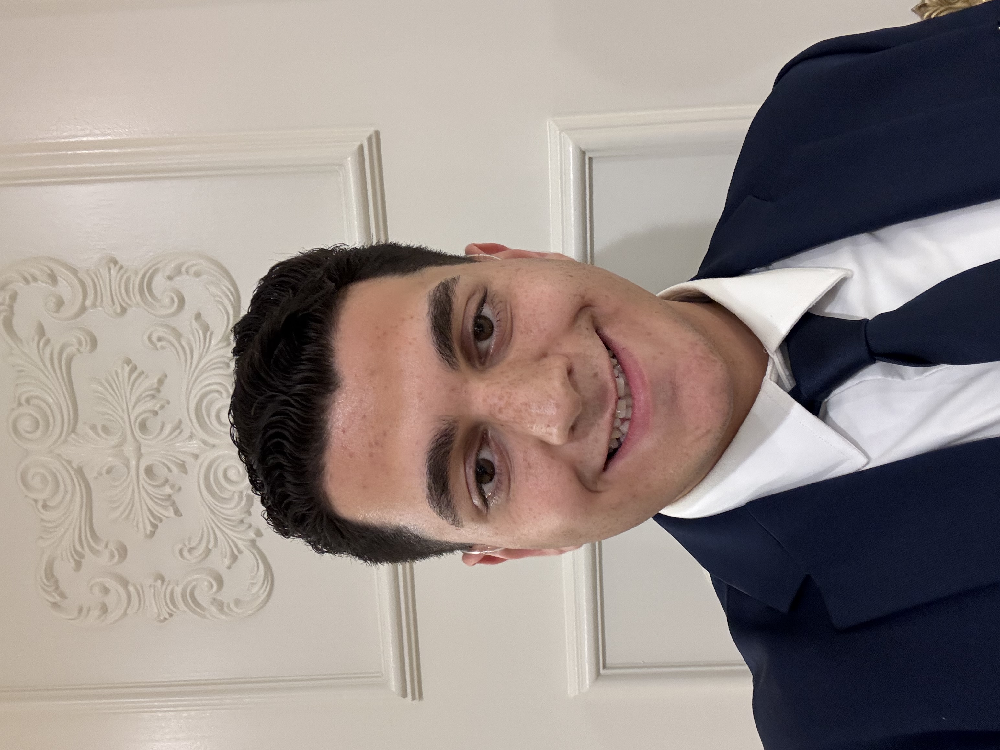

GPA: 3.6/4.0
Oakland University, Rochester, MI
Expected Graduation: May 2026
Ronel Kakos
Senior @ OU | Macomb, MI | ronelkakos@oakland.edu |
linkedin.com/in/ronelkakos
School of Engineering and Computer Science
Oakland University
Rochester, MI 48309
CAREER FOCUS: Information Security Analyst | IT Enterprise Infrastructure
IT student with a strong interest in information security and enterprise infrastructure. Experienced with IT systems, cybersecurity concepts, and team-based projects. Seeking full-time or internship 2026 opportunities to apply technical skills, problem-solving, and collaboration in real-world IT and security environments.
Education
Bachelor of Science in Information Technology with Concentration in CybersecurityGPA: 3.6/4.0
Oakland University, Rochester, MI
Expected Graduation: May 2026
IT Course Projects:
- Worked in a team of four to develop a web-based smart nutrition planner that delivers personalized meal and nutrition recommendations.
- Integrated the USDA FoodData Central API to retrieve real-time nutritional information for foods and ingredients.
- Collaborated on project documentation, presentations, and system design aligned with course milestones.
Smart Nutrition Planner (CSI 4160 - Integrated Computing Systems)
- Collaborated in a team of four to develop an audio-based language learning system focused on real-world listening comprehension.
- Contributed to the Audio Listening and Evaluation subsystem, enabling audio upload, playback, and interactive subtitles.
- Participated in requirements analysis, subsystem design, testing, and project documentation.
Listnr (CSI 3370 - Software Engineering and Practice)
- - Conducted course-based research on blockchain technology and associated security considerations as part of a team project.
- - Explored how blockchain systems are designed and evaluated through academic readings and class discussions.
- - Collaborated with my team in creating written documentation and delivering presentations summarizing research findings.
- - Reorganized and prepared 90+ VMware servers by gathering survey feedback, cleaning existing server team environments, and creating new servers through Terraform for migration into updated team environments.
- - Contributed to an intern-led project on migrating to Windows Server 2025.
- - Deployed Terraform, Puppet, VMware, and Orkes to streamline server automation and management.
- Here below are the technical skills I learned throughout my major so far:
- Programming Languages: Python, Java, SQL, JavaScript, HTML/CSS
- IT & Security Skills: Virtual Machines, Windows Server basics, Linux fundamentals, networking fundamentals, system configuration, access control concepts, troubleshooting hardware and software issues
- Software & Tools: Wireshark, Git/GitHub, VSCode, VirtualBox, AWS, n8n, Bash
- Operating Systems: Windows and Linux